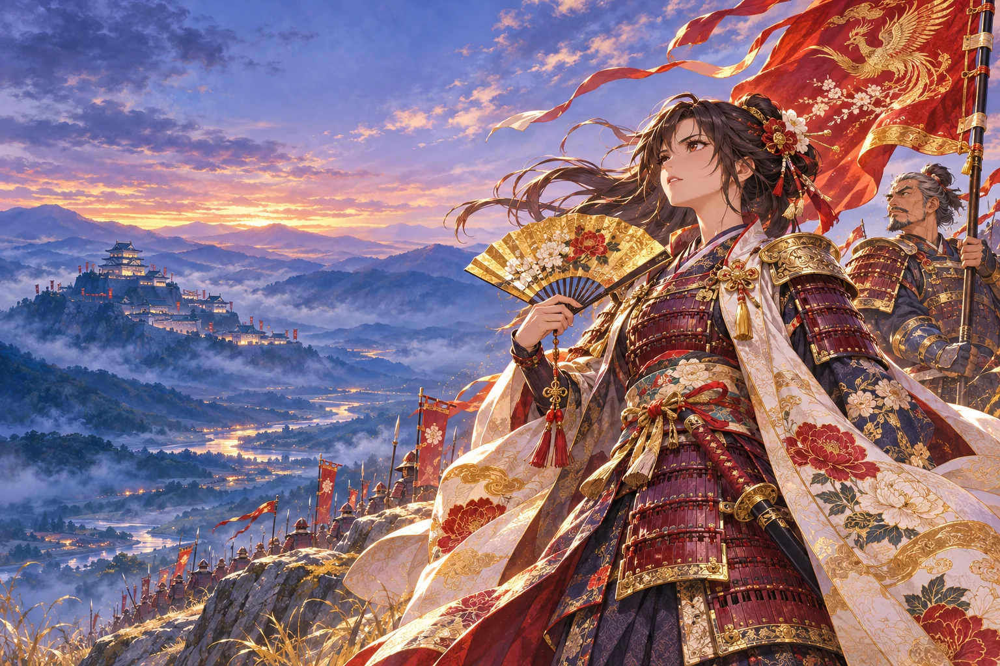

開始ボタンへ移動
SENGOKU VS
楽曲試聴
プレミアム

戦国戦略シミュレーション
戦国
VS
一城から、天下へ。
城下を育て、武将を率いて敵城へ。
軍師とともに、天下統一を目指す戦国戦略ゲーム。
城を選んで始める
領主プロフィールを探す
新版を開く
城下への支度をしています…
ゲーム紹介
内政・編成・合戦の流れ
遊び方
城を選んだ後の進め方
引き継ぎ・復元
領主とセーブデータの移行
読み込み中…
画面を整えています
戦国VS
指令
—
/
—
勾玉
—
ゲームにはJavaScriptが必要です。
遊び方
と
引き継ぎ・復元ガイド
は、そのままお読みいただけます。